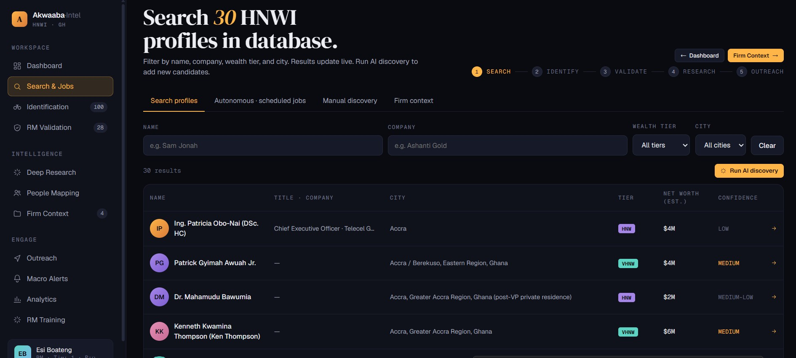
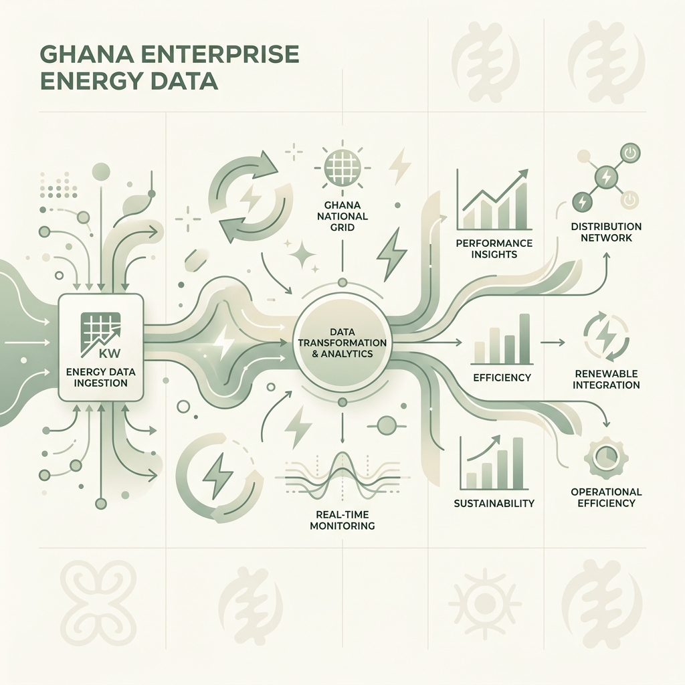
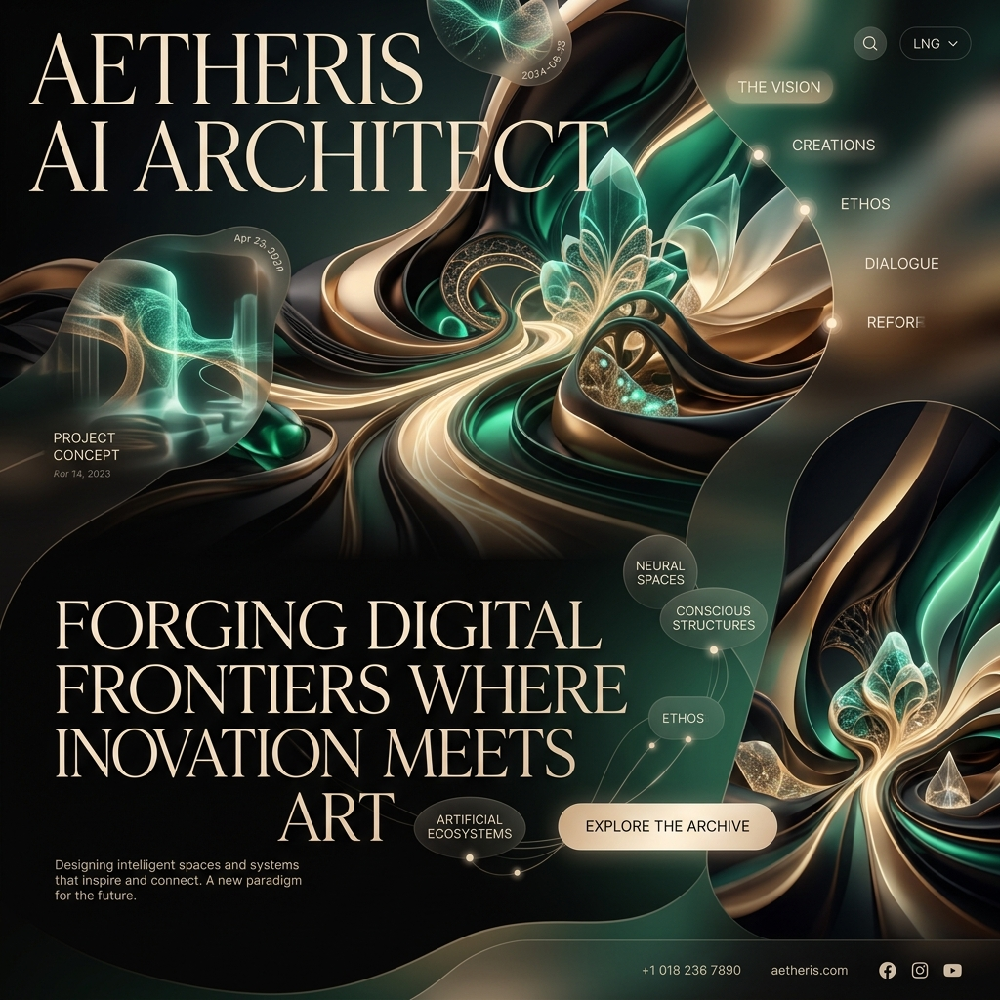
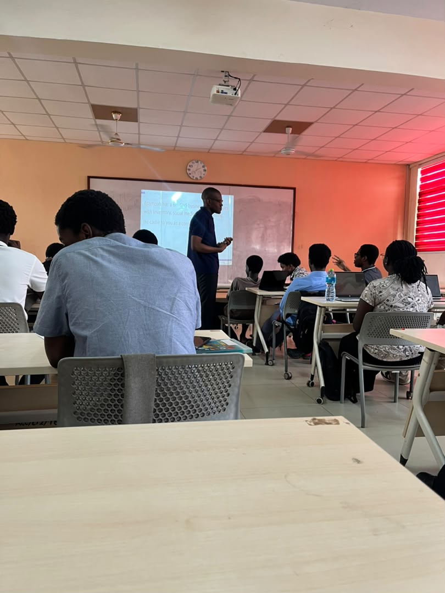

Strategic AI Systems for Enterprises in Africa & Beyond.
Stop losing months to manual reporting and missed grants. I build custom AI systems that give forward-thinking enterprises real-time, strategic visibility.
Trusted by ECG, Ghana Health Service, and global academic institutions to bridge the gap between technical artificial intelligence and measurable business KPIs.
Selected Demos & Projects
🔒 Confidentiality Notice: With the exception of HustleOS (open-source), all enterprise implementations below were built for private clients under confidentiality agreements. Codebases cannot be shared publicly. High-level architectures and screenshots are presented to illustrate implementation depth.
✅ Completed Demos

Quill Grant Intelligence
Complete grant lifecycle platform — from opportunity discovery through writing, auditing, committee review, submission, and post-award tracking.
View GitHub Repo
Akwaaba-Intel Radar
Architected an advanced client acquisition system utilizing Bright Data MCP and Pydantic AI to scrape and validate profiles, utilizing logging observability to prevent LLM hallucinations.
View GitHub Repo
HustleOS
A scalable, open-source multi-agent OS built with CrewAI and Pydantic deep-agents to automate career analysis, interview simulations, and portfolio creation.

ECG Digitization
Led the digitization of ECG district performance metrics, implementing SQL databases and automated reporting workflows that reduced review cycles from 3 months to 1 month.
🚀 Upcoming Demos

MindMatters
Developing a secure, local teletherapy matching web application in Ghana, utilizing robust patient-therapist matching logic and privacy-preserving data schemas.
In DevelopmentTransforming Operations
Off-the-shelf software fails in our unique operational realities. I build bespoke AI solutions that deliver immediate ROI.
Strategic AI Architecture
Stop relying on intuition. I design semantic systems that centralize fragmented data into a single, automated source of truth.
Predictive Analytics
Turn 3-month manual reporting cycles into 1-month automated pipelines using advanced data engineering.
Enterprise M&E Systems
Replace outdated spreadsheets with robust KPI frameworks that give executives real-time, CIA-level visibility.
Corporate Upskilling
Equip your workforce and students with the practical AI fluency required to stay competitive in the modern market.
About Me
With a foundation in Management, Data Science, and Monitoring & Evaluation, I specialize in translating complex operational challenges into streamlined, data-driven solutions. My background spans building AI solutions at Triple T Consult, optimizing national grid monitoring at ECG, and serving as a Lead Trainer at Russett Institute.
I believe in a minimalist approach to technology: building systems that are deeply grounded, highly efficient, and human-centered.

Empowering the next generation: Leading a corporate AI and data strategy upskilling session.
Joshua's strategic foresight and technical depth were pivotal in our curriculum transformation, bridging the gap between academic theory and industry reality.- Academic Partner, Regent University
Frequently Asked Questions
Understanding AI, data engineering, and automation for Ghanaian enterprises.
How does hiring an AI & Data Strategist translate to direct financial ROI?
I focus exclusively on high-impact business outcomes. By replacing manual reporting with real-time automated pipelines, I reduce cycles (like cutting planning from 3 months to 1 month at ECG, saving hundreds of operational hours) and eliminate costly human errors. For health organizations and agency partners, I build systems that secure grant funding and accelerate proposal cycles, directly driving top-line growth.
Why shouldn't we just buy an off-the-shelf AI or Business Intelligence (BI) tool?
Off-the-shelf software is built for Western environments with clean data and high-bandwidth infrastructure. When deployed in Ghana, these systems often fail to adapt to local workflows and connectivity constraints, becoming expensive "shelfware." I design custom, lightweight solutions that integrate into your existing daily operations (such as WhatsApp and Google Sheets) and solve specific data bottlenecks, ensuring 100% adoption and immediate utility.
What is semantic memory, and how does it solve our business goals?
Semantic memory allows custom AI agents to securely reference your organization's entire internal knowledge base (proposals, donor frameworks, business manuals). Instead of wasting weeks manually searching files or drafting documents, the AI retrieves precise context to draft reports and grant applications in minutes. This drastically reduces bid latency and increases the volume of successfully secured projects.
Ready to optimize your data?
Book a complimentary 30-minute strategic audit. We will review your current data processes, identify latency bottlenecks, and map out a high-level automation plan.